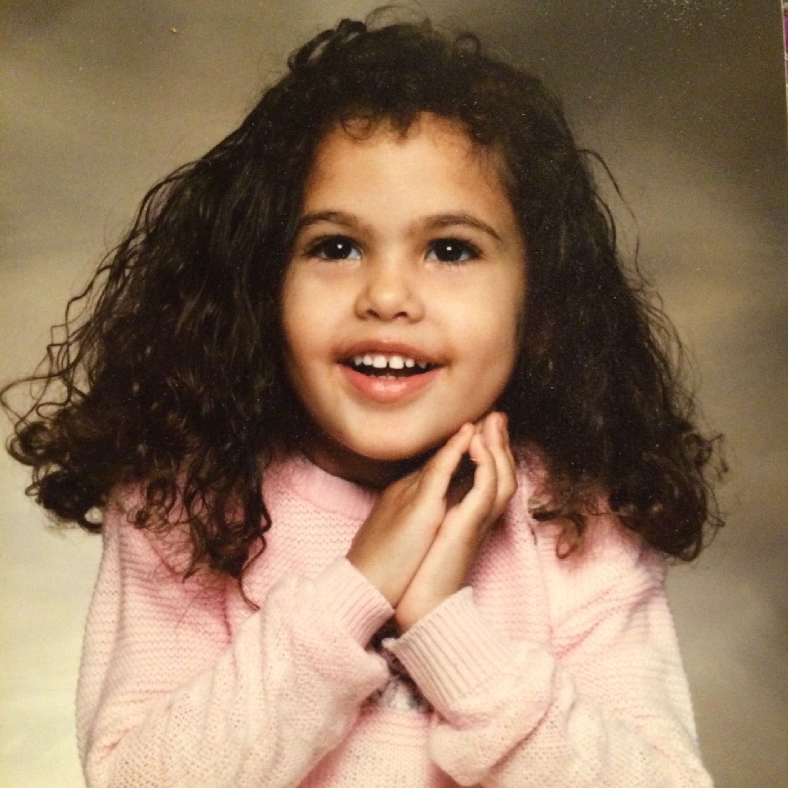
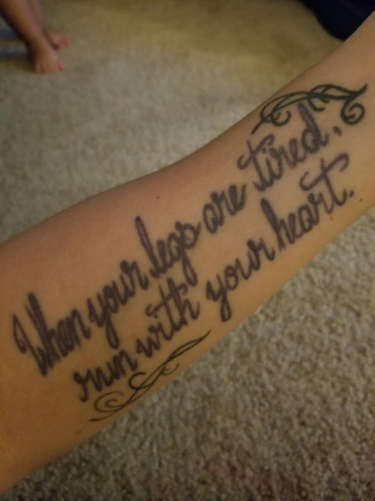
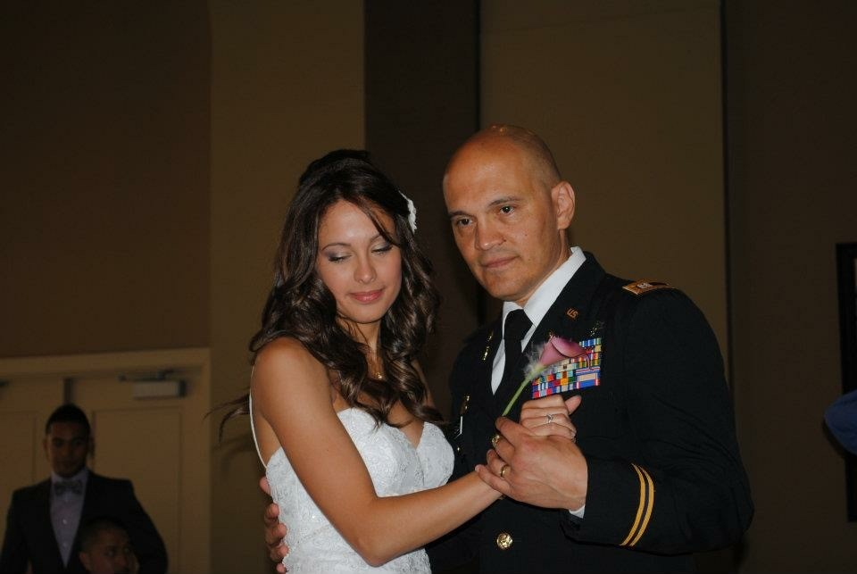
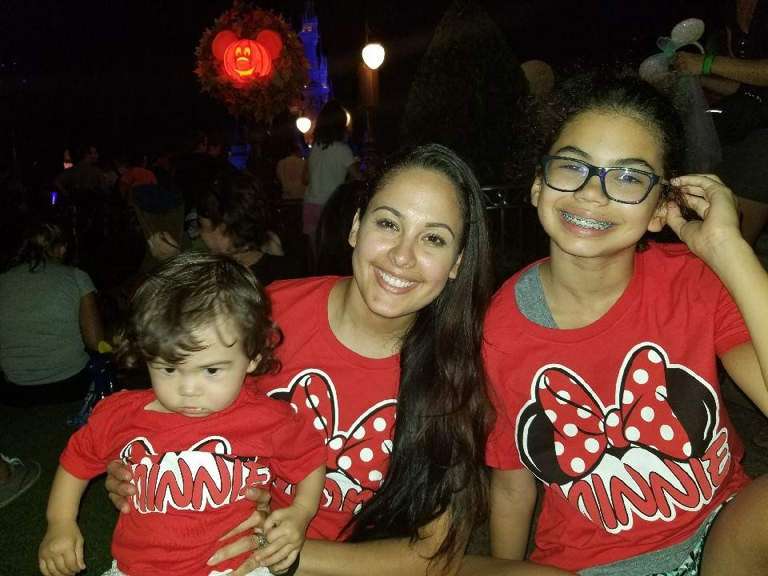

Tinissia Leguillow English
My children show me that my life means something. My daughter reminds me of this everyday.
Before she was born I decided I wanted to name her something unique and came up with her name. While I have heard may variations, I still feel her's is different and unique.

When she was a toddler my mother called Tinissia my glue because she was always
stuck to me. Sadly her mother decided she didn't want to be a mother and took off when she was three. This picture was taken shortly after her mother left. I am still amazed that someone could create something so precious and walk away from it.
To this day her mother has only been an occaisonal and distant visitor.
My angel
There were many sports she participated in while she was growing up. She tried everything from volleyball to swimming. There was a year spent doing dance and gymnastics. We also tried the trumpet and martial arts.
During her 6th grade field day her gym teacher encouraged her to try out for track when she got to middle school. I didn’t realize it at the time, but she ran like she was born to do it. She became our family’s “Forest Gump”. We spent the next eight years traveling throughout the Midwest for both Cross-country and track meets. All while continuing her martial arts practices until she earned her Black Belt in Taekwondo.
When she signed up for band her instrument of choice was the trumpet. This got off to a shaky start when I bought her trumpet from a pawn shop. Initially, she wouldn't play it and I didn't understand why. Apparently when I told her I bought it from a pawn shop my New York accent makes it sound like porn shop. After I cleared that up she played without reservation.
The years she spent running gave me some of my best memories and I enjoyed watching her and the other young ladies build life long confidence.
However, there were those days when Tinissia didn't do as well as she wanted and the ride home was very tense. Mostly because nothing I said was the right thing to say. I quickly learned that silence was the best on those days.

All heart
Now there was a happy yet very nervous time of uncertainty when she was getting married. The uncertainty part had lots to do with what my role was as the father of the bride when there isn’t a mother. It all started the day she when to pick out her wedding dress. My first mistake was letting her go alone. I didn’t realize she was expecting me to go with her. That was day one of my “Bridezilla”! After that day I made sure I was available for every fitting and anything else she needed me for. Do what the bride says and nobody gets hurt. Lesson learned!

Her day!
Of course after all the drama and anxiety, her wedding
day was an awesome day. On that day her husband adopted her daughter and of course she was a beautiful bride.
My girls.

As a mother she has been very thoughtful in raising a responsible young lady. She keeps her eldest daughter involved in many sports and more importantly many social activities.
These activities include several volunteering efforts with at risk childen and homeless shelters.
As life goes on you start to see things starting to shift. The children start to worry about their parents. The funny thing is, most of the time the parent would rather their kids focus on thier own lives.
Top